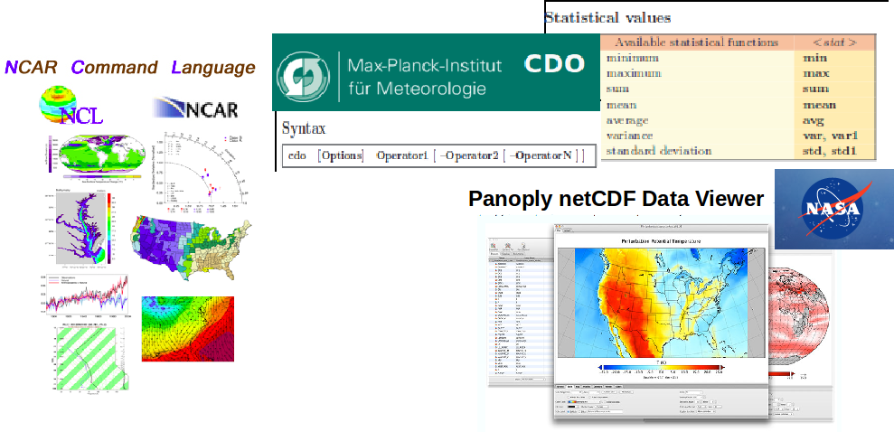

CDO (Climate Data Operators)
CDO is a collection of command-line operators to manipulate and analyze climate and numerical weather prediction data and can manipulate CAM model outputs (netCDF).
CDO provides more than 350 operators!
NCL (Ncar Command Language)
NCL is an interpreted language (no need to compile your program) designed specifically for scientific data analysis and visualization.
NCO (netCDF Operators)
NCO is a suite of programs designed to perform certain "operations" on netCDF files, i.e., things like averaging, concatenating, subsetting, or metadata manipulation.
Ncview: a netCDF visual browser
Ncview is one of the simplest visual browser for netCDF format files. It is available on most Linux machines.
Go to /projects/NS1000K/GEF4530/outputs/archive/f2000.T31T31.control/atm/hist and choose one file to visualize:
cd /projects/NS1000K/GEF4530/outputs/archive/f2000.T31T31.control/atm/hist
ncview f2000.T31T31.control.cam.h0.0007-09-28-00000.nc
Then select a variable (for instance T in 4d vars) and a plot should appear.
If you want to learn more about ncview:
Panoply netCDF Data Viewer
Panoply is a GUI (Graphical User Interface) application used to quickly visualize data in netCDF, HDF or GRIB formats. It can also perform simple calculations, apply masks, and to quickly create spatial or line plots.
Go to /projects/NS1000K/GEF4530/outputs/archive/f2000.T31T31.control/atm/hist and select any files ending with ".nc".
Python programming language using NetCDF4, Xarray and matplotlib
Python is a general purpose programming and scripting language which includes powerful visualisation and data analysis tools. Matplotlib is a general purpose plotting library gioving Python the power of MatLab. NetCDF files can be read using the NetCDF4 library and/or Xarray. The best distribution of Python for scientific use is the Anaconda distribution
Several examples of plotting routines for NetCDF data can be downloaded from https://github.com/hansbrenna/NetCDF_postprocessor
Using NCO and CDO
The model configuration that we use now has been set to output daily mean data. So every history file includes 30 days of daily data. Very often we are interested in monthly, seasonal and annual mean values as well. The model can be set to output those as well, but we have to make them from the daily output. To do this kind of processing NCO and CDO are very handy tools.
Making monthly mean data from daily data
First we need to load the CDO and NCO modules on the machine we are on. On Cruncher NCO is available by default.
module load cdo
module load nco #(On some machines)
I did it using a combination of NCO and CDO, but it is possible using just one. First I wanted to concatenate the history files into one, since CDO has an operator for calculating monthly means. Using NCO we concatenate using ncrcat
ncrcat f2000.*.nc ../../../../$USER/f2000.all.nc
cd ../../../../$USER/
cdo monmean f2000.all.nc f2000.all.monmean.nc
This takes a while. After creating monthly mean data in one big file, it can be nice to split it back up into yearly or monthly files to keep the filesize under control. This can be done using
cdo splityear f2000.all.monmean.nc f2000.
cdo splitmon f2000.0001.nc f2000.0001-
and you have monthly data with filenames on the form f2000.0001-01.nc.
To make yearly averages you can use ncra (NetCDF record averager) from NCO
ncra f2000.0001.nc f2000.0001.mean.nc
To make monthly means over all the control run years (monthly climatology) you can use ncra again (for January)
ncra f2000.000*-01.nc f2000.mean-01.nc
Or using CDO
cdo yearmean f2000.0001.nc f2000.0001.mean.nc
cdo ymonmean f2000.all.monmean.nc f2000.monthly_climatology.nc
This can then be split into monthly files again if that is what you want. When you make climatologies over multiple years, remember that you need to remove the first part of the simulations as this does not necessearily have good data. We would like you to remove the first 2 years of the control simulation from the climatology.
Plotting using python
You can use Python for plotting and visualising data.
In the output directory on cruncher there is a copy of Hans' python plotting code.
To use the pre-installed version on cruncher:
alias plotter='python /projects/NS1000K/GEF4530/outputs/NetCDF_postprocessor/plotter5.py'
alias plotter1d='python /projects/NS1000K/GEF4530/outputs/NetCDF_postprocessor/one_d_plotter.py'
The scripts work this way:
plotter -i -t 0 -lev yax -lat xax -lon mean -v U filename.nc
plotter1d filename time U
You will probably have to customize the plotting yourself (or write something from scratch).
For developing your own python plotting routines, you can copy it and make as much changes as you like. On cruncher:
git clone https://github.com/hansbrenna/NetCDF_postprocessor.git
In the folder called "NetCDF_postprocessor", there are many files and some of them have custom dependencies in the HB_module directory. This means that the files can't be copied around and run in from your current directory. The ones that are most relevant for you are the ones called plotter5.py and one_d_plotter.py. These plot a 2D filled contour plot and a line plot of 1D data respectively.
Opening files and plotting the data is relatively simple using the xarray library for python. A bare-bones plotting script would look like this:
import numpy as np
import pandas as pd
import xarray
import matplotlib
import matplotlib.pyplot as plt
filename = '/path/to/file/name.nc' #filename
var = 'U' #variable name
data = xarray.open_dataset(filename)
v = getattr(data,var) #to get a variable from the dataset use getattr() or data.U (data.VARIABLENAME)
#Decide what to plot
vm = v.mean(dim=['time','lon']) #Do averaging over time and longitude. vm is now 2-dimensional vm(lev,lat)
#To index you can use
#vm = v.isel(time=0,lon=32) # to get the first timestep and the 33rd longitude. vm is now 2-dimensional
fig1 = plt.figure(1)
CF=plt.contourf(vm.lat,vn.lev,vm)
plt.xlabel(vm.lat.name); plt.ylabel(vm.lev.name)
plt.colorbar(CF)
plt.show()
fig2 = plt.figure(2)
plt.plot(v.mean(dim=['lev','lat','lon']))
{kind=link}